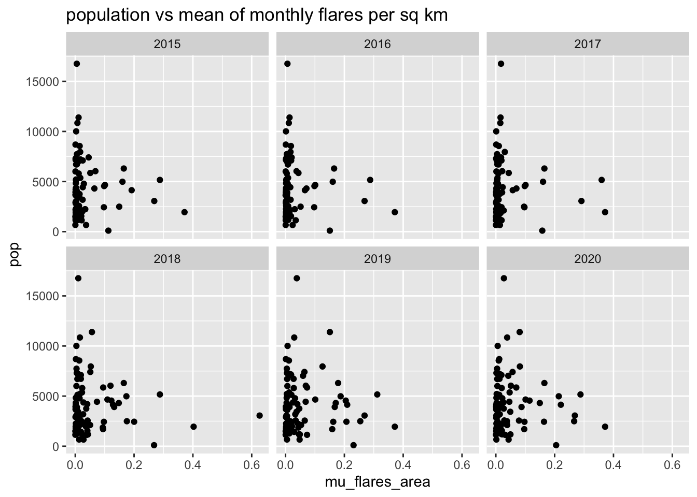

3 Flares
library(tidyverse)
library(magrittr)
library(lubridate)
library(knitr)
library(sf)
library(sp)
library(cowplot)flares_data <- read_rds("../data/preprocessed/flares_data.rds")
tracts_sf <- read_rds("../data/preprocessed/tracts_sf.rds")#there are flares for each year-month-basin, no need to fill zero values
flares_data %>%
mutate(yyyy_mm = format(as.Date(date), "%Y_%m")) %>%
group_by(yyyy_mm, basin) %>%
summarise(flares = sum(flares)) %>%
ggplot() +
geom_line(aes(x = ym(yyyy_mm), y = flares, color = basin)) +
theme_cowplot() +
labs(title = "Total flares per month", x = "")## `summarise()` has grouped output by 'yyyy_mm'. You can override using the
## `.groups` argument.
# tract-year-month entries are completed where zero is missing
flares_months <- flares_data %>%
mutate(year = year(date),
month = month(date)) %>%
select(year, month, GEOID, basin, area, pop, flares) %>%
complete(nesting(year, month), nesting(GEOID, basin, area, pop),
fill = list(flares = 0)) %>%
group_by(year, month, GEOID, basin, area, pop) %>%
summarise(flares = sum(flares, is.na = T)) %>%
ungroup() %>%
group_by(year, month) %>%
complete(GEOID) %>%
mutate(flares_area = flares / area)## `summarise()` has grouped output by 'year', 'month', 'GEOID', 'basin', 'area'.
## You can override using the `.groups` argument.#table(flares_months$GEOID)flares_years <- flares_months %>%
group_by(year, GEOID, basin, area, pop) %>%
summarise(
min_flares_area = min(flares_area, na.rm = T),
q1_flares_area = quantile(flares_area, probs = 0.25, na.rm = T),
median_flares_area = median(flares_area, na.rm = T),
mu_flares_area = mean(flares_area, na.rm = T),
q3_flares_area = quantile(flares_area, probs = 0.75, na.rm = T),
max_flares_area = max(flares_area, na.rm = T)
)## `summarise()` has grouped output by 'year', 'GEOID', 'basin', 'area'. You can
## override using the `.groups` argument.ggplot(flares_years) +
geom_boxplot(aes(x = as.factor(year), y = mu_flares_area, col = basin)) +
labs(title = "Mean of monthly flares per sq km (for tracts with flares)")
time_parquet_sf <- tracts_sf %>%
filter(GEOID %in% unique(flares_data$GEOID),
basin == "Permian Basin") %>%
select(GEOID)
time_parquet_sf %<>%
left_join(
flares_years %>%
pivot_wider(id_cols = GEOID, names_from = year, values_from = mu_flares_area)
) %>%
select(-GEOID)## Joining, by = "GEOID"spplot(as_Spatial(time_parquet_sf))
time_parquet_sf <- tracts_sf %>%
filter(GEOID %in% unique(flares_data$GEOID),
basin == "Gulf Coast Basins") %>%
select(GEOID)
time_parquet_sf %<>%
left_join(
flares_years %>%
pivot_wider(id_cols = GEOID, names_from = year, values_from = mu_flares_area)
) %>%
select(-GEOID)## Joining, by = "GEOID"spplot(as_Spatial(time_parquet_sf))
flares_years %>%
ggplot() +
geom_point(aes(x = mu_flares_area, y = pop)) +
facet_wrap(~year) +
labs(title = "population vs mean of monthly flares per sq km")
top_rank_area <- flares_years %>%
arrange(basin, year, desc(mu_flares_area)) %>%
group_by(year, basin) %>%
mutate(rank = row_number()) %>%
slice(1:3)
top_rank_area %>% DT::datatable()